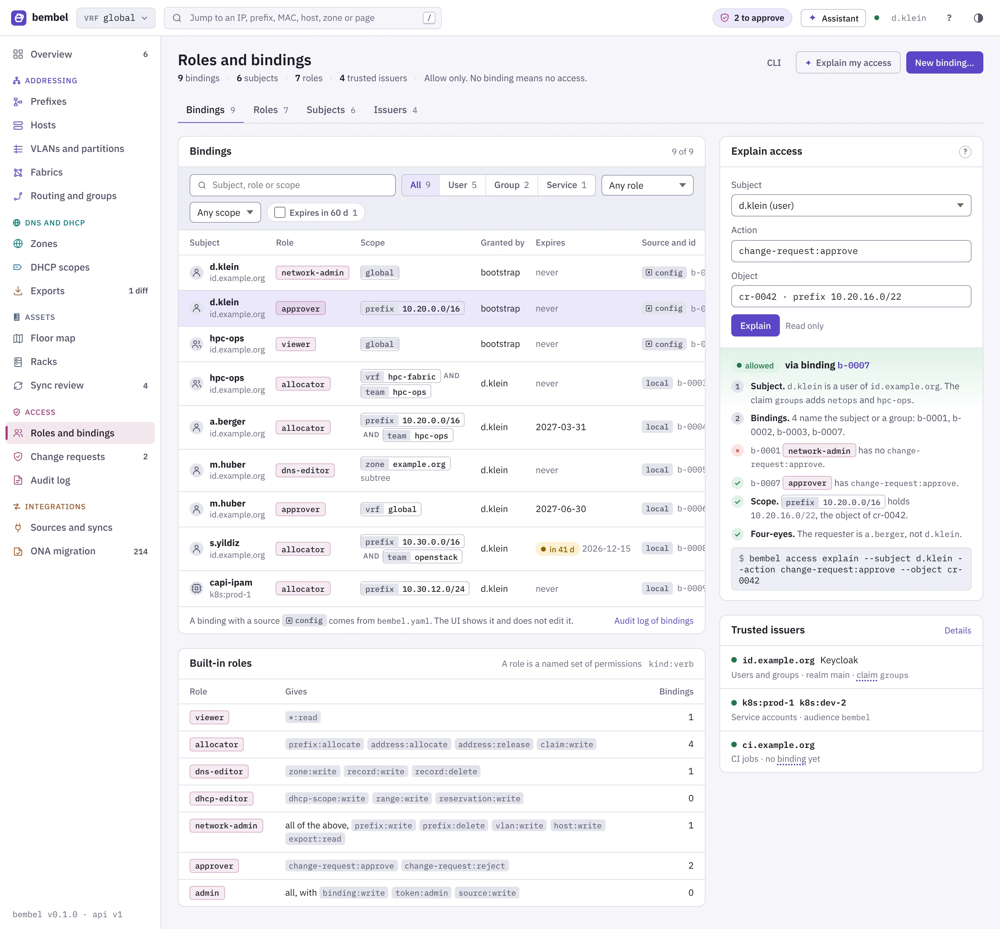
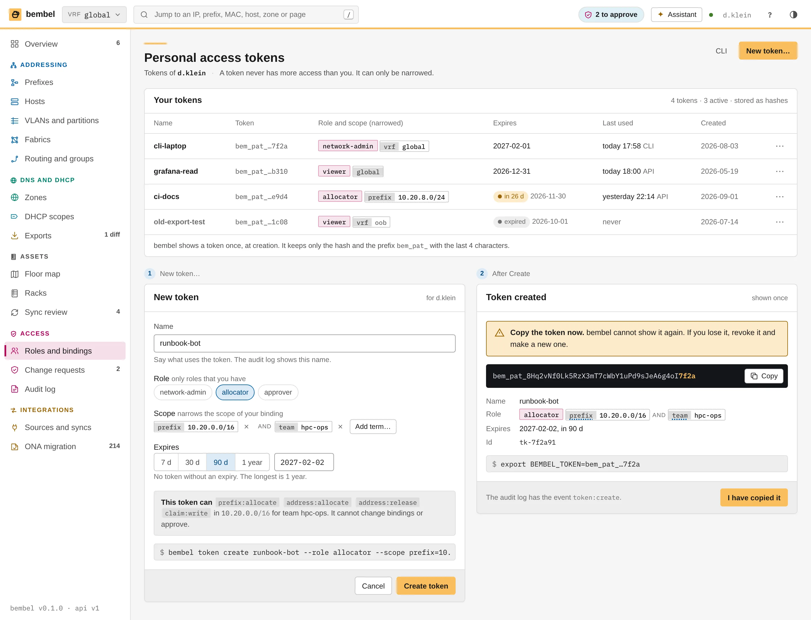
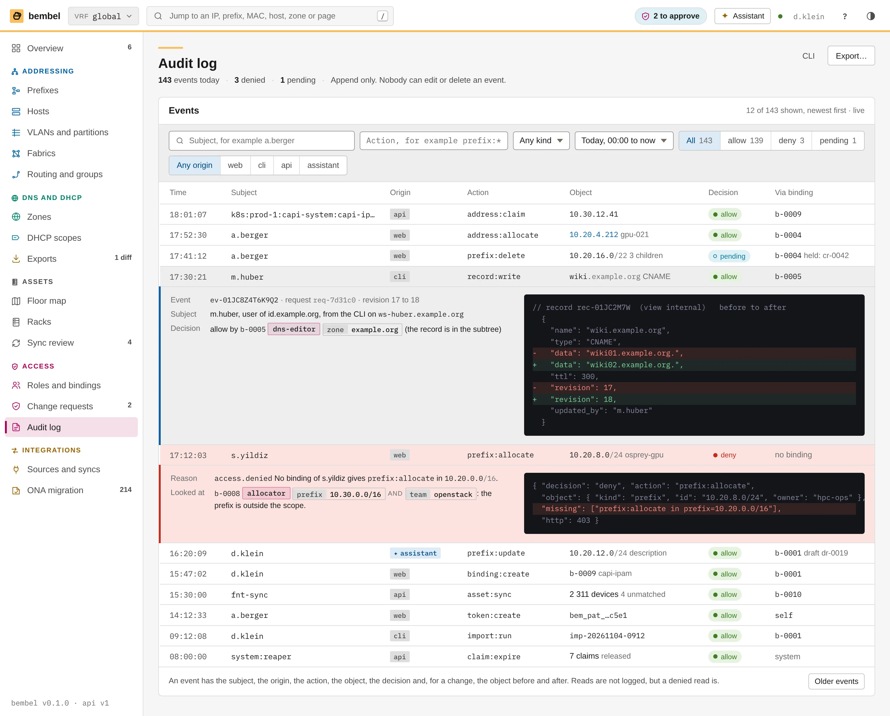
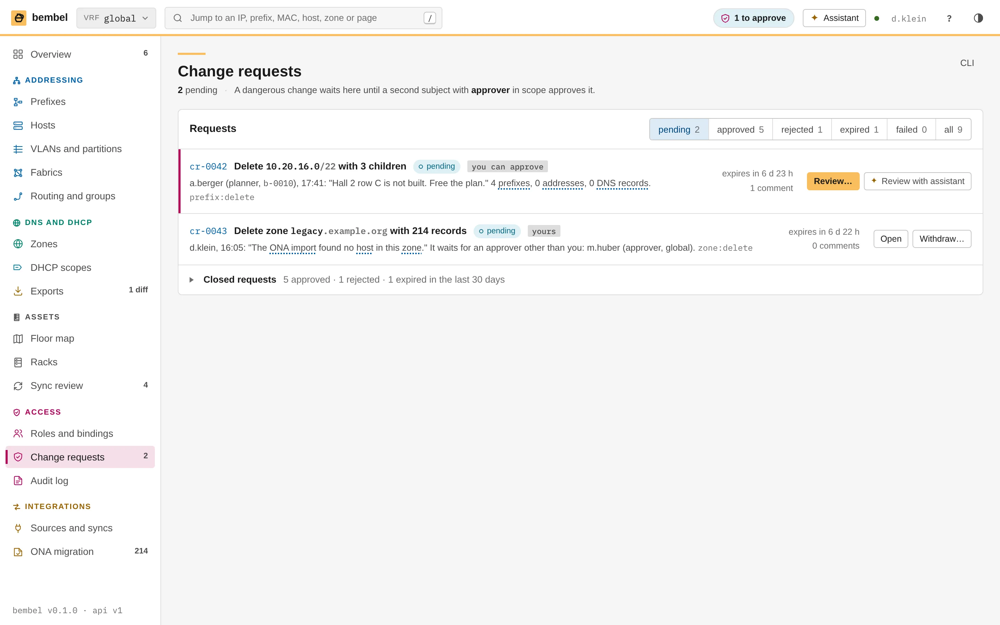
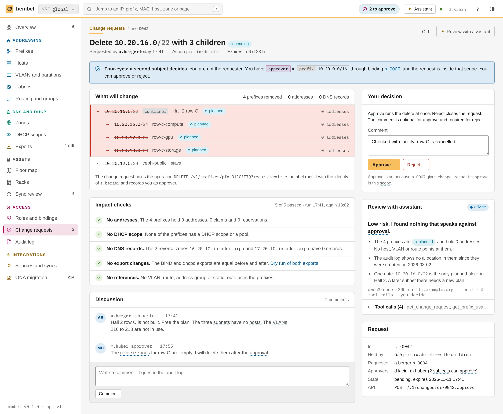
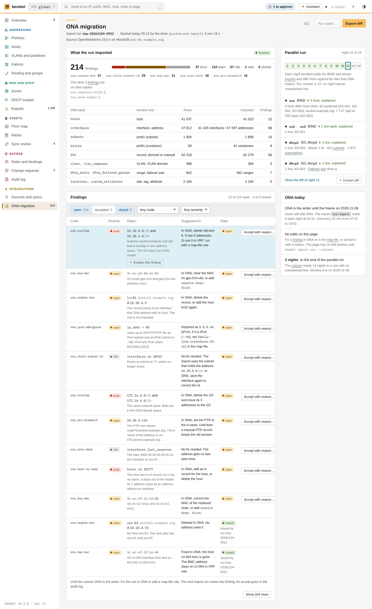
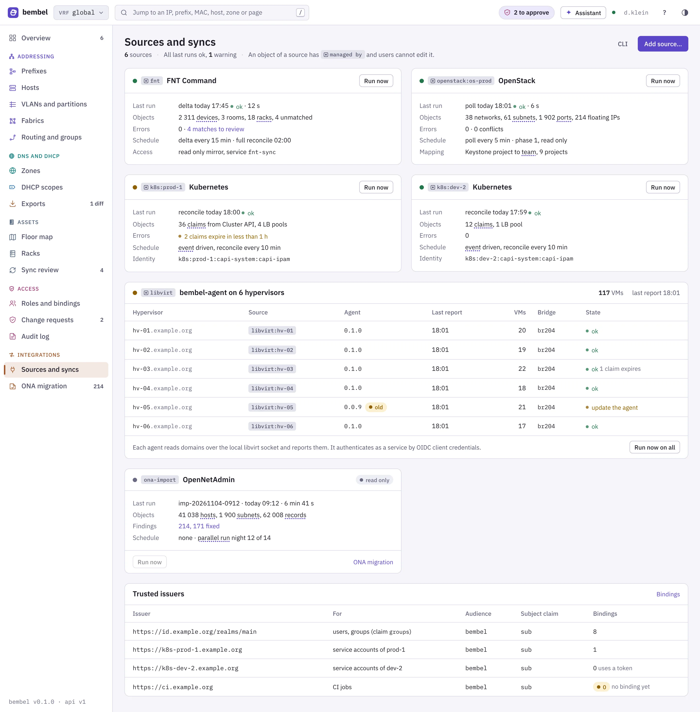
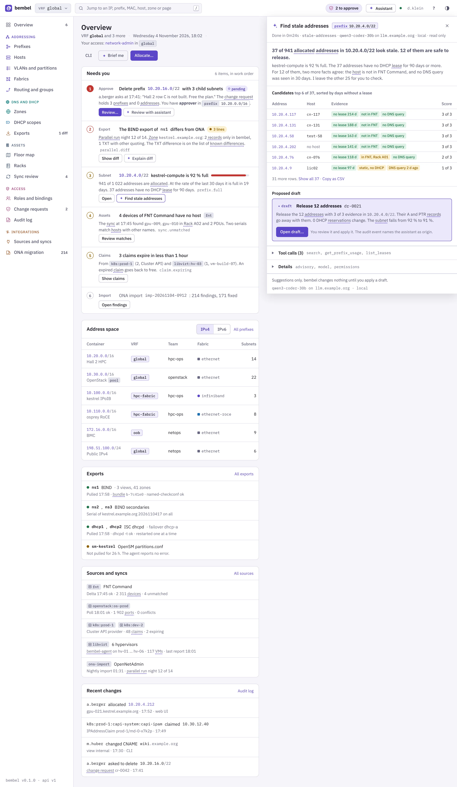
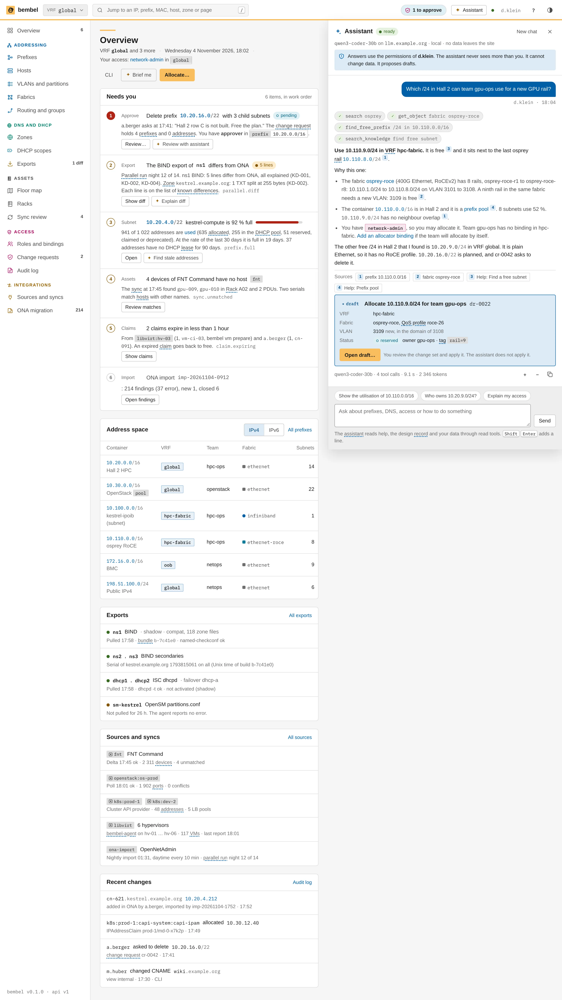
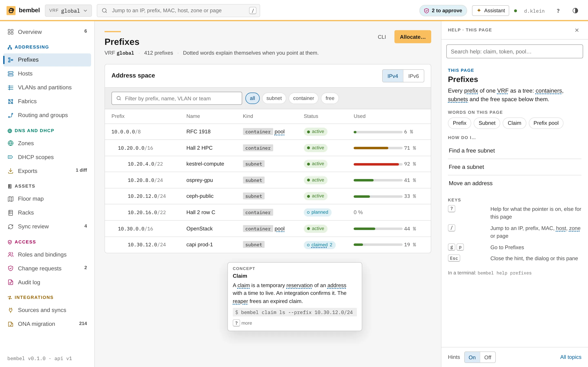

This chapter specifies the pages of the bembel web UI for access, change control and migration: Roles and bindings, tokens, the audit log, change requests, the ONA import with its parallel run, and Sources and syncs. Each page gets a screenshot, its purpose, layout, parts, states and its URL, API and CLI. The assistant and the help pane are shown at the end. Assistant and help specifies them.
d.klein with the roles network-admin (global) and approver (prefix 10.20.0.0/16).approver in scope decides.web, cli, api, assistant), the decision and the binding.
Purpose: the page shows who may do what, where. It also answers the question "why can this user do this?" without a guess. The model is in Access control: a binding joins a subject, a role and a scope. A role is a set of permissions of the form kind:verb.
kind value. A binding with several terms shows the word AND between the chips. Both terms must be true.allowed or denied) and the binding that decided. A numbered path shows each step.| Id | Subject | Role | Scope | Expires |
|---|---|---|---|---|
b-0001 | d.klein (user) | network-admin | global | never |
b-0002 | hpc-ops (group) | viewer | global | never |
b-0003 | hpc-ops (group) | allocator | vrf=hpc-fabric AND team=hpc-ops | never |
b-0004 | a.berger (user) | allocator | prefix=10.20.0.0/16 AND team=hpc-ops | 2027-03-31 |
b-0005 | m.huber (user) | dns-editor | zone=example.org (subtree) | never |
b-0006 | m.huber (user) | approver | vrf=global | 2027-06-30 |
b-0007 | d.klein (user) | approver | prefix=10.20.0.0/16 | never |
b-0008 | s.yildiz (user) | allocator | prefix=10.30.0.0/16 AND team=openstack | 2026-12-15 |
b-0009 | capi-ipam (service, k8s:prod-1:capi-system:capi-ipam) | allocator | prefix=10.30.12.0/24 | never |
The card calls POST /v1/access:explain. The call is read only. It writes no audit event and changes nothing. The result lists the bindings that name the subject, directly or through a group. For each binding it says why the binding does or does not give the action. The steps in the story:
d.klein. The claim groups adds netops and hpc-ops.network-admin in b-0001 has no change-request:approve. approver in b-0007 has it.prefix=10.20.0.0/16 holds 10.20.16.0/22, the object of cr-0042.a.berger.bembel.yaml has the source badge config. The UI shows it and does not edit it.binding:write sees the table and the card. New binding… and the ⋯ menus are disabled, with the reason in the tooltip.binding:write. The error code is binding.last-admin./access/bindings[?subject=&role=&scope=&kind=]; tabs /access/roles, /access/subjects, /access/issuersGET /v1/bindings, POST /v1/bindings, DELETE /v1/bindings/{id}, GET /v1/roles, POST /v1/access:explainbembel binding ls|create|delete, bembel access explain --subject d.klein --action change-request:approve --object cr-0042
Purpose: a token lets a script or a CLI call the API as the user. A token has a role and a scope. It can only narrow the access of its owner. It never adds access. A token is a stored hash. bembel shows the secret once.
bem_pat_…7f2a: the prefix and the last four characters), Role and scope (narrowed), Expires, Last used (time and origin) and Created.prefix:allocate … in 10.20.0.0/16 for team hpc-ops." bembel computes it with the same check as Explain access. The line shows the intersection of the token and the user.| State | Display |
|---|---|
| Active | Date in plain text; last used as "today 17:58 CLI". |
| Expires in less than 30 days | Warn pill "in 26 d". Extend… in the ⋯ menu. |
| Expired | Grey pill "expired". The row is muted. Only Delete is possible. |
| Revoked | The row disappears. The audit log keeps the event token:revoke. |
/account/tokens (also from the user menu, "Tokens")GET /v1/tokens, POST /v1/tokens (the response holds the secret once), DELETE /v1/tokens/{id}bembel token ls|create|revoke. The CLI logs in with the device grant. It does not need a token.
Purpose: the log answers "who did what, when, from where, and was it allowed?". An audit event is append only. The database refuses an update or a delete of an event. Audit events are not logs: they stay in the database, with an optional stream to Loki or a SIEM.
*, for example prefix:*), kind of object, time, decision (allow, deny, pending) and origin.web, cli, api or assistant. The chip of the assistant has the spark mark.pending and links to its change request (17:41, prefix:delete on 10.20.16.0/22, cr-0042).access.denied, the missing permission and the bindings that bembel looked at.| Origin | Meaning |
|---|---|
web | The web UI, with a BFF session. |
cli | bembel with the device grant or a token. |
api | A service or an integration (an OIDC token or a token). |
assistant | A change that came from a draft of the assistant. The subject is the user who applied it. The event also has the id of the draft (dr-0019). |
The log has no row for a successful read. It has a row for a denied read. This keeps the log small and still shows probing. States: an empty filter result says "No event matches." and shows the active filters as chips.
/audit[?subject=&action=&kind=&since=&decision=&origin=]; one event /audit/{id}GET /v1/audit-events (cursor paging), GET /v1/audit-events/{id}, SSE /v1/events for new eventsbembel audit ls --since today --decision deny, bembel audit show ID --format json
Purpose: a dangerous action does not run at once. bembel holds it as a change request. A rule decides which actions it holds: delete a prefix with children, delete a zone, a bulk change of more than N objects (the default is 100). A second subject with approver in scope decides. This is the four-eyes rule.
cr-0042), title, state pill, a tag ("you can approve" or "yours"), the reason of the requester, the counts (4 prefixes, 0 addresses, 0 DNS records), the rule code, the time to expiry and the number of comments. cr-0042 is the first row and has a coloured left edge.The top bar has a chip "2 to approve". It links to this page. A user without approver in any scope does not see the chip. States: with no pending request the card says "No change request waits." The page of a user without approver rights shows the same list. The tag "you can approve" is absent, and Review… opens the read only page.
/changes[?state=pending|approved|rejected|expired]GET /v1/changes, GET /v1/changes/{id}, POST /v1/changes/{id}:withdrawbembel changes ls --state pending
Purpose: the page gives an approver all facts to decide. It does not ask the approver to trust the title. The page shows the exact change, the checks that bembel ran and the discussion.
10.20.16.0/22 (container "Hall 2 row C") and the three children 10.20.16.0/24, 10.20.17.0/24 and 10.20.18.0/23. The head counts: 4 prefixes removed, 0 addresses, 0 DNS records. The foot names the held operation DELETE /v1/prefixes/{id}?recursive=true.16.20.10.in-addr.arpa and 17.20.10.in-addr.arpa have 0 records), no export changes (a dry run of the BIND and dhcpd exports), no references (VLAN, route, address group, static route). A failed check has a red mark and a sentence. It does not block the decision, but it says what will break.change-request:approve in this scope." If the user cannot approve, the buttons are disabled and the line gives the reason.prefix.delete-with-children), the requester, the subjects who can approve, the state and the API call.Approve runs the held operation at once, as the requester. The audit event of the delete names a.berger as subject and d.klein as approver. If the data changed in the meantime (a new address in the subtree), the approve fails with change.stale and the checks run again. The request stays pending.
/changes/{id}POST /v1/changes/{id}:approve, :reject (body: comment), POST /v1/changes/{id}/comments, GET /v1/changes/{id}/impactbembel changes show cr-0042, bembel changes approve cr-0042 --comment "…", bembel changes reject cr-0042 --comment "…"
Purpose: the page shows what the import of OpenNetAdmin did and what is left to fix. The mapping of each table is in Mapping from OpenNetAdmin. The plan of the whole migration is in Migration. The import reads the ONA database (MariaDB, ONA 19.0.x) and writes objects with the source ona-import.
bembel import ona --dry-run.error, warn, info), Object, Suggested fix, State and an action. "Apply all suggested fixes…" opens a dialog with the list. The button "Explain this finding" is on the selected row.| Code | Count | Meaning | Suggested fix |
|---|---|---|---|
ona.orphan-dns | 96 | A DNS record that no host or interface uses. | Import as a manual record, or delete it. |
ona.dup-mac | 38 | One MAC address on two hosts. | Keep it on the live host. Clear it on the other host, or merge the hosts. |
ona.ipv6-ambiguous | 31 | An IPv6 address stored as a decimal number in a column for IPv4. | Read the number as IPv6 when the subnet is dual stack. |
ona.stale-subnet-id | 28 | A row points at a subnet id that no longer exists. | Find the subnet by the address. |
ona.overlap | 21 | Two subnets overlap in one address space. | Move one to another VRF, or delete it if it is empty. |
A fix is a normal change. It has the origin web (or cli) and the source ona-import. The audit log records it. The state of a finding is open, fixed or accepted. An accepted finding needs a note. Undo reverts a fix that is still the latest change of its object.
/import[/{run}][?state=&code=&severity=]GET /v1/imports, GET /v1/imports/{id}/findings, POST /v1/imports/{id}/findings/{fid}:fix, :accept, :undobembel import ona --dsn … [--dry-run], bembel import show ID, bembel import findings --state open --code ona.overlapPurpose: ONA and bembel run side by side for 14 nights. ONA stays the system that feeds the DNS and DHCP servers. Each night bembel builds its own BIND and dhcpd exports and diffs them against the files that ONA makes. The run ends when the diff is empty or each difference has an explanation (Migration).
ns1 BIND has a diff of 3 lines (zone kestrel.example.org: 2 records only in bembel and 1 TXT with other quoting). ns2, dhcp1 and dhcp2 are equal.The TXT difference is a known difference: bembel writes a TXT record in one string, and ONA splits it at 255 characters. A known difference has a name in parallel.known. It does not count in the night colour. The Overview shows the same state as item 2 of "Needs you".
/import. The diff is /exports/diff?night=12.GET /v1/parallel-run, GET /v1/parallel-run/nights/{n}bembel export diff --against ona --night 12
Purpose: the page shows each source of external data, when it ran last, what it holds and what went wrong. An object of a source has managed by, so a user cannot edit it in bembel. The chapters OpenStack, Kubernetes and Virtual machines specify the integrations.
k8s:prod-1:capi-system:capi-ipam.hv-01 to hv-06), 117 VMs and the bridge br204. hv-05 runs agent 0.0.9, so it has an "old" pill and the state "update the agent". Run now on all asks every agent to report at once.https://id.example.org/realms/main), the two clusters and the CI issuer https://ci.example.org. The CI issuer has no binding, so its jobs get no access. A warn pill says so.| State | Display |
|---|---|
| Running | The dot pulses. Run now is disabled. The row "Last run" shows the progress. |
| Failed | A red dot and the error code in the row "Errors", for example sync.auth. The Overview shows it in "Needs you". |
| No report | An agent without a report for 3 intervals gets a red state. bembel keeps the VMs as last seen and marks them stale. |
/integrations, trusted issuers at /integrations#issuersGET /v1/sources, POST /v1/sources/{id}:run, GET /v1/agents, GET /v1/issuersbembel source ls, bembel sync fnt --delta, bembel sync run openstack:os-prod, bembel agent lsThe assistant and the help pane are on every page. Assistant and help specifies them. This chapter shows the screenshots, because they use the same shell. Three more mockups exist: the assistant drawer with the advisory "Find stale addresses", the assistant chat, and the help pane.



qwen3-coder-30b on llm.example.org, local).assistant.? opens the pane for the element under the pointer, else for the page.?pane=assistant or ?help=prefixes.POST /v1/assistant/advisories/{id}:run, POST /v1/assistant/chat, GET /v1/help/pages/{page}, GET /v1/help/topics/{id}bembel help TOPIC, bembel mcp